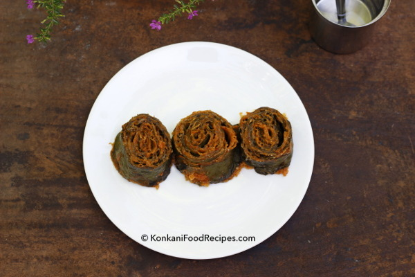

Home
Pathrode

Description
Konkani’s love for pathrode is beyond words. The sight of colocasia leaves excites Konkanis, as they eagerly
prepare and enjoy this delicious dish. There's nothing better than steaming hot pathrode with a generous drizzle
of coconut oil—it's pure joy!
Pathrode is a beloved delicacy in Konkani cuisine. Also known as pathrode in Kannada and alva panna pathrode in
Konkani, these flavorful pinwheels are made using colocasia leaves. A spicy batter, prepared by grinding rice,
grated coconut, tamarind, and red chillies, is spread over the leaves, which are then rolled, sliced, and
steamed. The steamed slices are traditionally enjoyed with plenty of coconut oil, whether hot or cold.
Pathrode can be prepared in different ways—steamed, shallow-fried, or even deep-fried—each method bringing out
its unique taste and texture.
Ingredients
- 25-30 colocasia leaves
- 1 cup dosa rice/medium grained rice
- 3/4 - 1 cup grated coconut (more coconut you add, softer pathrado you make)
- 1 lemon sized tamarind/3-4 bilimbi
- 10-12 red chillies
- Salt to taste
- Jaggery to taste
- A pinch of asafoetida
Steps
- Soak dosa/medium grained rice for atleast half an hour. After it's been soaked, wash and drain all the
water.
- Grind rice with tamarind, red chillies, salt, jaggery, grated coconut, asafoetida (soaked for few minutes
to soften), using as little water as possible into a dry, coarse paste.
- Transfer the batter into a bowl and keep it aside. This ground rice batter is called 'pathrade peet' in
Konkani, peet meaning batter in Konkani.
- Chop off the stem portion from the colocasia leaves. Carefully remove any thick veins present in the center,
on the back of the colocasia leaves using a sharp knife. Take care not to tear off colocasia leaves while
you devein them.
Tender colocasia leaves have very little developed veins and do not require deveining. When you use mature
colocasia leaves make sure you devein the leaves completely to avoid itching/stinging sensation on cooking.
- Wash colocasia leaves well and keep them aside so that all the excess water drains out.
- Once all the excess water drains out, start making a pinwheel - Alva panna lolo in Konkani. Watch how to
make pinwheels - lolo
-
Keep the biggest leaf upside down on a clean surface. The pointed end of the leaf should be facing away from
you. Apply a layer of ground masala uniformly on the back of the leaf. Using your fingers cover the entire
leaf with a layer of masala.
This process of smearing a layer of ground rice batter over colocasia leaves is called as 'pathrado saroche'
in Konkani, saroche meaning smearing in Konkani.
- Keep another leaf on the first leaf and repeat till you have a stack of 8-10 leaves (depending on how
thick/thin you want your pathrado rolls and slices to be) with a coating of masala on them.
- Size of colocasia leaves vary, try to distribute the leaves you place, uniformly on the biggest, lower leaf
so that you get a uniform thickness pathrode roll later on.
- Fold the stack of leaves on either sides as shown below and apply masala on them.
- Start rolling it from one end. Start from your end and work towards top. Continue rolling till you reach the
other end.
- Roll them tightly or else while you cut them into slices, the layers/leaves tend to open up.
- Repeat the above smearing, rolling process with rest of the colocasia leaves.
- Meanwhile get a steamer going.Chop each roll into thin slices of 1 - 2 inch thickness using a sharp knife.
While cutting them into
slices, hold the roll firmly with your hand and be careful not to press them hard with your fingers, to
prevent the masala from oozing out.
- Then place the slices inside the steamer. You can stack the slices one upon another in the steamer.Steam
them for 15 minutes on high flame and then for 30 minutes on medium to low flame.